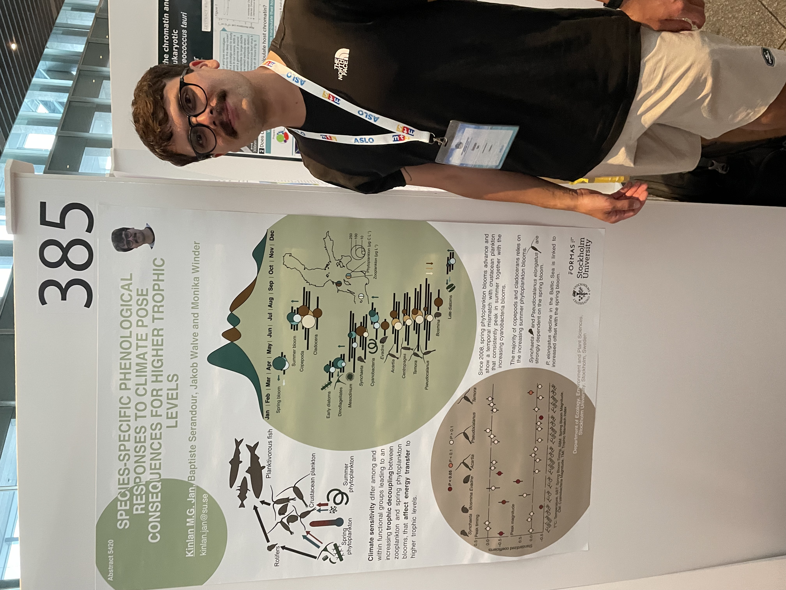
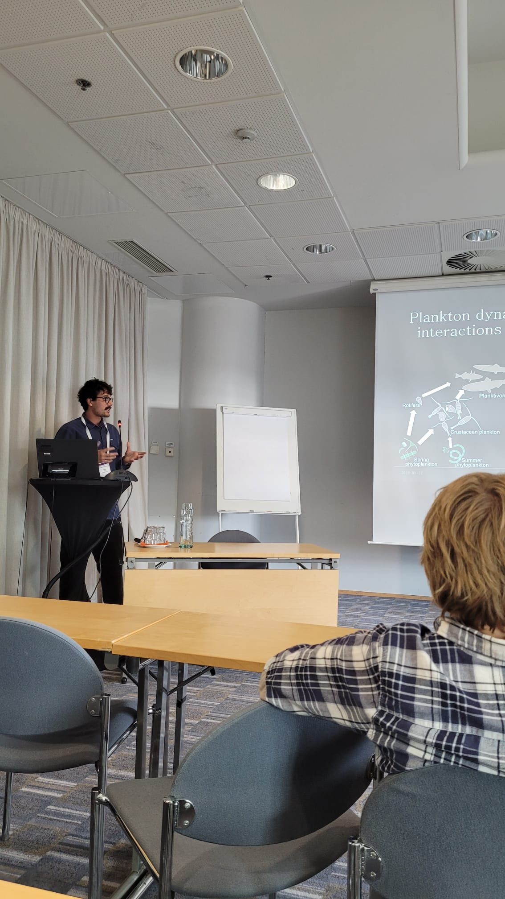

Working Project II
Plankton blooms over the annual cycle shape trophic interactions under climate change
Plankton dynamics and interactions shape energy fluxes in aquatic food webs. Understanding plankton phenology and their responses to their changing environment is crucial to predict cascading effects up to higher trophic levels. In this study, we use 15 years of plankton monitoring data to identify trends and drivers of timing and magnitude of bloom-forming phyto- and zooplankton taxa in the Baltic Sea. Our results show that copepods peak in synchrony with the summer cyanobacterial bloom and are decoupled from the highly productive spring phytoplankton blooms that tend to appear earlier. Driven by the offset with spring phytoplankton bloom, magnitudes of Pseudocalanus, an important copepod prey for fish, has decreased over the study period. Being coupled to the spring phytoplankton, the bloom magnitude of the rotifer Synchaeta was also driven by the offset with the spring bloom. These two zooplankton have an important role in niche differentiation for planktivorous fish, thus earlier spring bloom might affect transfer efficiencies to higher trophic levels. We also find an extension of the productive season with newly developing diatom blooms in autumn, supporting secondary production later in the season. We show that multiple phytoplankton blooms support zooplankton production over the annual cycle and further challenge the assumption that zooplankton follow synchronously spring phytoplankton dynamics. While responses to climate vary among and within plankton functional group with implication for higher trophic levels, this study stresses that plankton phenologies need to be considered over the entire annual cycle to project climate change implication on species interactions and energy flow at the base of the pelagic food web.
A popular science summary can be found here.
The full article is available in open access: Jan, K.M.G., Serandour, B., Walve, J., Winder, M. 2024. Plankton blooms over the annual cycle shape trophic interactions under climate change. Limnology and Oceanography Letters 9 (3), 209-218. doi:10.1002/lol2.10385
The data and the Rscripts are also publicly available on Zenodo. doi: 10.5281/zenodo.10708263.
The project was presented as a poster at ALSO Aquatic Sciences Meeting 2023, June 2023, Palma de Mallorca, Spain, and as a talk at the Baltic Sea Science Congress 2023, August 2023, Helsinki, Finland.

